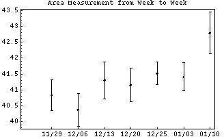
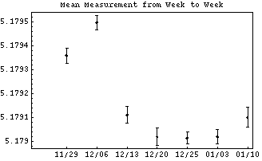
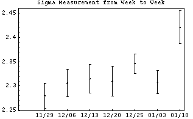
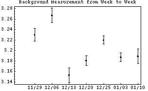
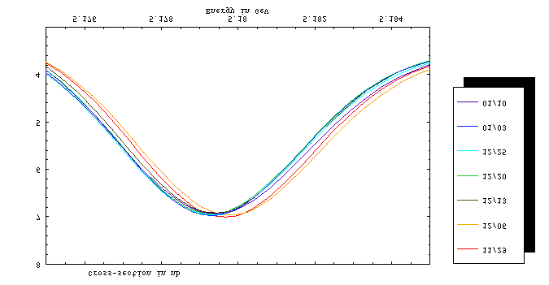
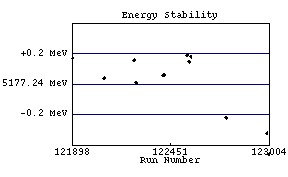
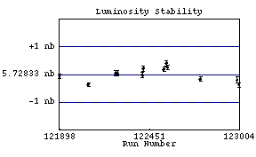
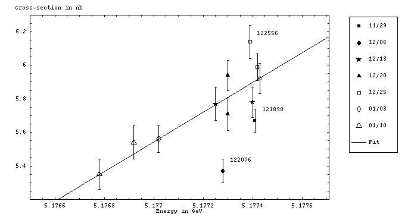

Upsilon Scans: Summary of Y(3s) Pass1
Comparison of the Fits
| Week | Area | Mean | Sigma | Background |
| 11/29/01 | 40.83  0.48 MeV nb 0.48 MeV nb | 5.17936 0.000031 GeV |
2.28 0.026 MeV | 3.23 0.012 nb |
| 12/06/01 | 40.37 0.52 MeV nb | 5.179499 0.000030 GeV |
2.306 0.028 MeV | 3.267 0.014 nb |
| 12/13/01 | 41.30 0.58 MeV nb | 5.179111 0.000036 GeV |
2.315 0.031 MeV | 3.153 0.014 nb |
| 12/20/01 | 41.15 0.53 MeV nb | 5.179019 0.000036 GeV |
2.310 0.031 MeV | 3.1807 0.0095 nb |
| 12/25/01 | 41.52 0.36 MeV nb | 5.179014 0.000025 GeV |
2.346 0.020 MeV | 3.2200 0.0079 nb |
| 01/03/02 | 41.41 0.44 MeV nb | 5.179019 0.000031 GeV |
2.308 0.024 MeV | 3.1870 0.0083 nb |
| 01/10/02 | 42.79 0.66 MeV nb | 5.179101 0.000042 GeV |
2.421 0.034 MeV | 3.189 0.014 nb |
 |
| Weighted Mean | 41.29 0.18 MeV nb | 5.179164 0.000012 GeV |
2.324 0.010 MeV | 3.2027 0.0040 nb |
|  | |
 |
| | |
|  | |
 |
Superimposition of the Fits

It seems fairly clear that it is the energy which is fluctuating
from the value given by the energy program, not the hadronic
cross-section from pass1.
The SEN #2 value is a likely culprit. This goes into the energy
determination as a multiplicative factor, rather than a additive
shift. Therefore, I should check to see if all the points from all
weeks fit a single curve more readily if their energies are corrected
multiplicatively or additively.
Stability of the -2 MeV Point
(Please pardon the bad graph title--- "Luminosity Stability" should really be "Hadronic Cross-Section Stability")
|  |
 |
Run | Energy |
| 121898 | 5.17741 GeV |
| 122076 | 5.17728 GeV |
| 122245 | 5.17740 GeV |
| 122256 | 5.17725 GeV |
| 122409 | 5.17730 GeV |
| 122415 | 5.17730 GeV |
| 122542 | 5.17743 GeV |
| 122556 | 5.17739 GeV |
| 122564 | 5.17742 GeV |
| 122766 | 5.17702 GeV |
| 122993 | 5.17692 GeV |
| 123004 | 5.17678 GeV |
|
Run | Hadronic Cross Section |
| 121898 | 5.67 0.07 nb |
| 122076 | 5.37 0.07 nb |
| 122245 | 5.78 0.09 nb |
| 122256 | 5.77 0.10 nb |
| 122409 | 5.71 0.10 nb |
| 122415 | 5.94 0.09 nb |
| 122542 | 5.92 0.09 nb |
| 122556 | 6.14 0.10 nb |
| 122564 | 5.99 0.08 nb |
| 122766 | 5.56 0.08 nb |
| 122993 | 5.54 0.10 nb |
| 123004 | 5.35 0.09 nb |
|
With the possible exceptions of
121898,
122076
and 122556,
the -2 MeV points are consistant with lying on the same Cross-section
VS. Energy curve. The residuals of the points to the curve
(January 10, 2001 Scan) are:
| Run | | Residual | | Square Norm Resid |
| 121898 | | 0.25052 nb | | 12.8084 |
|
| 122076 | | 0.43616 nb | | 38.8232 |
|
| 122245 | | 0.13182 nb | | 2.1452 |
| 122256 | | 0.00943 nb | | 0.0089 |
|
| 122409 | | 0.11391 nb | | 1.2976 |
| 122415 | | -0.11609 nb | | 1.6638 |
|
| 122542 | | 0.01788 nb | | 0.0395 |
| 122556 | | -0.23690 nb | | 5.6123 |
| 122564 | | -0.06079 nb | | 0.5774 |
|
| 122766 | | 0.01164 nb | | 0.0212 |
|
| 122993 | | -0.05969 nb | | 0.3563 |
| 123004 | | 0.00225 nb | | 0.0006 |
|  |
The sum of the square normalized residuals (i.e. chi2 ),
excluding the two points from the January 10th scan itself,
is 63.0074. The number of degrees of freedom is just the number
of points (again, excluding runs 122993 and 123004), or 10, yielding a
reduced chi^2 of 6.30.
Estimation of Systematic Error
The derivative of the distribution at the -2 MeV point is 0.870 nb/MeV.
The 0.43616 nb deviation (122076), if all the systematic error is in
the energy measurement, corresponds to a maximum energy jump of
0.5013 MeV between datasets. The biggest deviation seen within
a dataset is the 0.2548 nb jump between 122542 and 122556, which
corrseponds to an energy jump of 0.2929 MeV within a dataset.
The jumps between datasets don't affect the final result, since the
area will be determined by averaging the areas of the individual scans
together.
Simulations of fits that include random unseen energy jumps with
0.3 MeV as a typical size suffer from a 1.5% systematic
uncertainty. Since seven fits are averaged together, the average
suffers form a 1.5% / sqrt(7) = 0.57% systematic uncertainty.
This is still very rough, efficiencies have not yet been considered,
etc.
Comparison of Continuum Point with High-Energy Tail Point
The December 25, 2001
scan includes a high-energy tail point taken at 20 MeV above the peak.
The weighted mean cross-section for this point is 3.294
0.019 nb, compared to 32.07
0.016 nb for the continuum (a 3.5 sigma
difference). We can be confident, therefore, that the tail does
actually extend into such high energies.
There isn't enough statistics, however, for this point alone to
distinguish a Jackson-Sharre distribution from a Kureav-Fadin
distribution. Although the two diverge the most widely at this 20 MeV
point, the (background-subtracted) difference between them is 15% =
0.013 nb, which is comparable to the uncertainty in the point.
Pass1 No-Tracking Measurement of Gamma_ee
Using Br_mumu (branching fraction to mupairs) = 0.032 0.018,
| CUSB (1983) | 0.39 0.02 0.03 keV |
|
| CLEO (1984) | 0.42 0.04 0.03 keV |
|
| Pass1 No-Tracking (2002) | 0.4213 0.0208 0.0024* keV |
Using a modern value of Br_mumu = 0.0181 0.0017,
| Pass1 No-Tracking (2002) | 0.4052 0.0027 0.0023* keV |
* This systematic uncertainty is a from a rough estimate
of energy measurement errors ONLY.
 Jim Pivarski <mccann@mail.lns.cornell.edu>
Last Modified: Friday, January 18, 2002
Jim Pivarski <mccann@mail.lns.cornell.edu>
Last Modified: Friday, January 18, 2002